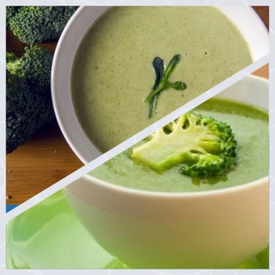
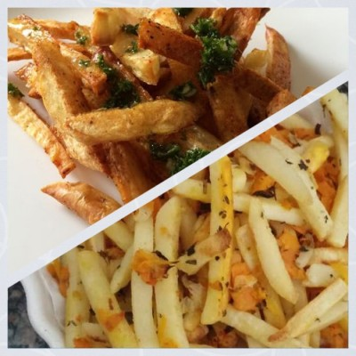
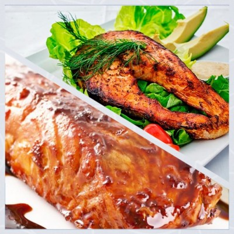

Torta Chajá
Ingredientes
- Crema de leche 400 Gramos
- Leche entera 100 Gramos
- Kombucha de mango 100 Gramos
Preparación
- Mezcla la crema de leche con la leche y la kombucha en un recipiente de cerámica con un batidor de globo cubre con manta de cielo y luego con la tapa de vidrio.
- Deja reposar a temperatura ambiente durante 2 a 3 días.
- En el fondo de un molde cerámico o de vidrio, cuadrado o rectangular, acomoda las soletas.
- Agrega una capa generosa de tu creme fraiche de kombucha de mango.
- Repite hasta llegar al tope del molde.
- Decora con mango fresco. Refrigera por mínimo 3 horas antes de consumir.
- Sirve como postre o merienda.
Crema de brócoli

Ingredientes
- 1 brócoli fresco
- 1 calabacín mediano
- 1 cebolla mediana
- 1 papa mediana
- 500 ml. de agua
- Pimienta, tomillo, comino y sal a gusto
Preparación
- Quitar el tronco del brócoli ya que este no será parte de la receta.
- Cortar la cebolla en trozos pequeños al igual que la patata y el calabacín.
- Poner al fuego una olla con aceite de oliva, agregar la cebolla y sofreír por un par de minutos.
- Luego, añadir el calabacín y dejar cocer por otro par de minutos.
- Añadir el resto de ingredientes y dejar cocinar hasta que hierva, cuando esto suceda es momento de agregar las especias y bajar el fuego al mínimo hasta que los vegetales estén cocidos.
- Finalmente, llevar a la batidora para triturar las verduras hasta conseguir la crema de brócoli con la consistencia que sea de nuestro agrado.
Papas con chimichurri

Ingredientes
- 1 kg. de papas cortadas al estilo francés
- 30 gramos de chimi seco
- Albahaca
- 1 taza de agua
- 5 cdas. de pickles de zanahoria
- Sal, pimienta y cúrcuma a gusto
Preparación
Cortar las papas al estilo francés o en la forma que más se guste.
Colocar las papas en un recipiente con agua y sal y llevar a refrigerar por no menos de una hora.
Hidratar el chimi en una taza de agua.
En una fuente para horno agregar un chorrito de aceite, luego, poner las papas junto con los pickles y el chimi.
Si los pickles son caseros, también se debe añadir un chorrito de vinagre a la preparación para que el sabor no varíe.
Precalentar el horno y hornear a baja temperatura.
Servir y agregar sal en caso sea necesario.
Pollo en salsa de palta
Ingredientes
- Un pollo en trozos
- 50gr. de palta
- 1 pieza de pan
- 1 cebolla mediana
- 1 tomate
- 1 papa
- 1 manzana
- Aceite vegetal
- Sal y pimienta al gusto
Preparación
- Salpimentar las piezas de pollo y freír. Reservar.
- Aparte, freír el tomate junto con la cebolla y la pieza de pan.
- Luego, licuar el preparado junto con la palta.
- La consistencia de la salsa resultante no tiene que ser demasiado espesa, por lo que, si esto ocurriese, se puede añadir un poco de agua.
- Picar la papa y manzana en pequeños dados.
- Agregarlos a las piezas de pollo junto con la salsa licuada y mezclar para integrar todos los ingredientes.
- Llevar a fuego lento hasta que las papas, manzanas y el pollo terminen de cocer.
- Servir acompañado de arroz blanco.
Salmón al horno

Ingredientes
- 2 rodajas de salmón
- Aceite de oliva
- 1 limón
- 1 cebolla mediana
- Sal gruesa y pimienta negra al gusto
Preparación
Calienta el horno a una temperatura de 180°C.
Limpia el salmón y salpimentar al gusto, también puedes añadir un chorro de aceite de oliva.
Poner el pescado en una bandeja para horno.
Partir el limón en dos y cortar en rodajas una de las mitades, ponerlas sobre el salmón.
Llevar al horno y dejar cocinar por aproximadamente 20 minutos. Ten cuidado con el tiempo de cocción ya que los 20 minutos no es una regla que se deba cumplir, algunos hornos pueden ser más rápidos y otros más lentos.
Sirve acompañado de arroz blanco o ensalada, también puedes utilizar la mitad del limón restante para acompañar el plato ya que algunas personas gustan de acompañar el pescado con zumo de limón.